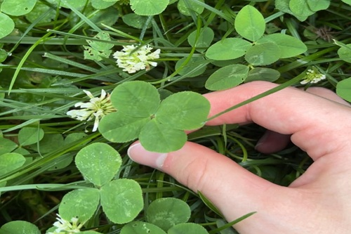
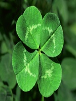

Rare Clovers

You've probably heard of a four leaf clover before, but have you found one? It wouldn't be uncommon if the answer was no.
Many have searched and few have found four leaf clovers, but believe it or not, there can be rarer.
Beyond Four Leaves
Although people search for the four leaf clover more often than the others, finding anything rarer is sure to increase your chances of winning the lottery.
As pictured to the right, you can see just how statistically improbable finding a four leaf clover is, and the other rarer ones.
Rare Versions
